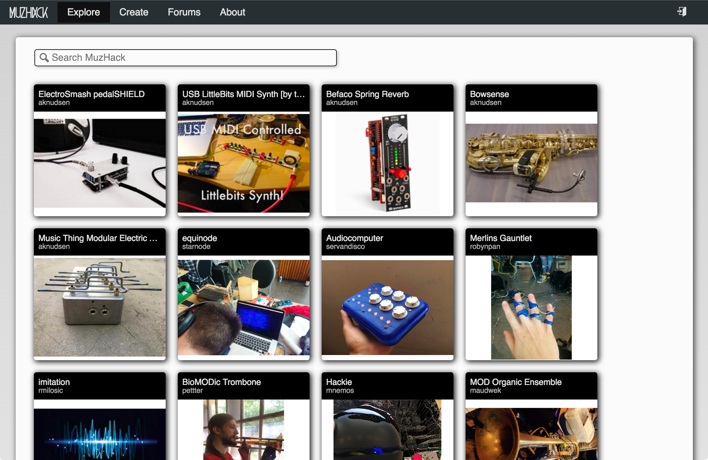

Arve Knudsen
https://muzhack.com
Berlin, Germany
Catalog of Music Hardware Projects
MuzHack is primarily a catalog of music hardware projects.

Features
- Searchable catalog of music hardware projects
- Free for anyone to join
- Grouping of projects via tags
- Graphical interface for adding projects including Markdown editor
- Functionality for adding GitHub hosted projects
- Projects typically include instructions/files for reproduction
- Open source (hosted at GitHub)
Future Directions
- Listing of related workshops - past and future
- Embeddability of pages
- Comments on projects
- Representation of components for basing projects on (f.ex. Arduino)
- Ability to fork ("remix") projects